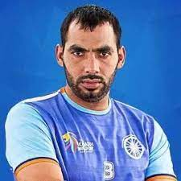
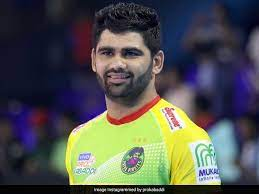
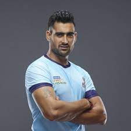

Ajay Thakur was born on May 1, 1986, in Dabhota village, Himachal Pradesh, India. He was passionate about kabaddi from a young age and started his professional career in the sport. Thakur's expertise as a raider made him stand out in the Pro Kabaddi League (PKL). He represented different franchises in the league and became one of the league's top raiders, consistently scoring points for his teams. Ajay's agility, swift movements, and ability to outwit defenders made him a formidable opponent on the kabaddi mat. Apart from his PKL success, Ajay Thakur has also been an essential part of the Indian national kabaddi team. He has represented India in various international tournaments and has contributed significantly to India's victories on the global stage.
Achivement and Awards: 1.Arjuna Award 2. Asian Games Gold Medals 3.Kabaddi World Cup
Ajay Thakur's performances in kabaddi have earned him respect and admiration from fans and fellow players alike. He remains a prominent figure in Indian kabaddi and continues to inspire young kabaddi enthusiasts with his skill and dedication to the sport.
Manjeet Chhillar was born on August 18, 1986, in Nizampur, Haryana, India. He began his kabaddi career at a young age and quickly gained attention for his exceptional all-round abilities. Manjeet was known for his powerful raids and his tenacious defending, making him a valuable asset to any team. In the Pro Kabaddi League (PKL), Manjeet played for different franchises and showcased his versatility as an all-rounder. He became one of the most sought-after players in the league due to his ability to turn games around single-handedly with his performances.
Achivement and Awards: 1.Arjuna Award 2. Asian Games Gold Medals
Manjeet Chhillar's exceptional performances and ability to excel in both raiding and defending have earned him the reputation of being one of India's finest all-round kabaddi players. He continues to inspire many aspiring kabaddi players in the country.
ANUP KUMAR

Anup Kumar was born on November 20, 1983, in Palra village, Haryana, India. He began his kabaddi journey at a young age and showed immense talent and dedication to the sport. Anup quickly rose through the ranks and established himself as one of India's finest kabaddi players. He played as a raider and was known for his agility, swift movements, and strategic raiding skills. Anup became a key member of the Indian national kabaddi team and played a significant role in India's victories in various international tournaments..
Achivement and Awards: 1.Arjuna Award 2. Asian Games Gold Medals 3.Kabaddi World Cup
Anup Kumar's leadership skills, along with his exceptional raiding abilities, earned him a reputation as one of the most respected and revered kabaddi players in India. After his playing career, he ventured into coaching and continued to contribute to the growth and development of the sport in the country.
PRADEEP NARWAL

Pardeep Narwal was born on February 16, 1997, in Rindhana village in Sonipat district, Haryana, India. He developed a keen interest in kabaddi at a young age and began training diligently to hone his raiding skills. Narwal's big break came in 2015 when he made his debut in the Pro Kabaddi League (PKL) with the Patna Pirates. He quickly made a name for himself with his exceptional raiding abilities and strategic gameplay. His signature move, the "dubki," where he dodges defenders by swiftly ducking under their grasp, became his trademark move..
Achivement and Awards: 1.Pro Kabaddi League (PKL) Season 4 Most Valuable Player 2.Pro Kabaddi League (PKL) Season 5 Most Valuable Player 3.Arjuna Award
Apart from his PKL success, Narwal also represented the Indian national kabaddi team in international competitions. He played a crucial role in India's victories and further solidified his status as one of the best raiders in the sport globally.
RAHUL CHAUDHARI

Rahul Chaudhari was born on June 16, 1993, in Bijnor, Uttar Pradesh, India. He developed a passion for kabaddi at a young age and started his professional career in the sport. He made his debut in the Pro Kabaddi League (PKL) during its inaugural season in 2014. Representing the Telugu Titans, Rahul quickly became one of the top raiders in the league and gained widespread recognition for his agility, speed, and raiding abilities.
Achivement and Awards: 1.Pro Kabaddi League Records 2. Arjuna Award Nomination
Throughout his career, Rahul Chaudhari has been a consistent performer and has played a crucial role in the success of the teams he represented. He has showcased his raiding prowess not only in the PKL but also in various national and international kabaddi tournaments.